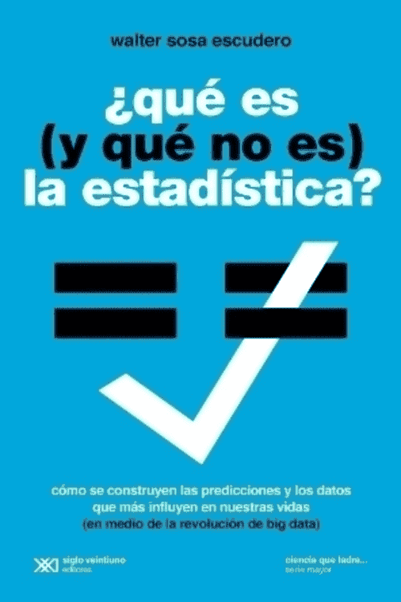

¿Qué es ( y qué no es ) la estadística?
03/03/2022 • Teoría matemática de la computación • 208 páginas
Descripción
Cómo se construyen las predicciones y los datos que más influyen
Del clima al desempleo, del dólar al colesterol, de las elecciones al Mundial de Futbol, las estadísticas, estimacionesy predicciones son parte de nuestra vida cotidiana pero, en contraposición a esa ubicuidad e influencia, el modo en que se producen ocupa un lugar ínfimo (si alguno) en nuestra educación general. Creemos en esos números que nos rodean, aunque no sea para nada obvio por que deberíamos hacerlo. Deberíamos hacerlo?
Este libro, que es una introducción informal y a la vez rigurosa a la estadística, revisa los principales fundamentos de esta ciencia, sus contribuciones mas relevantes, sus limitaciones, sus usos y tambien sus abusos.
Walter Sosa Escudero
Autor